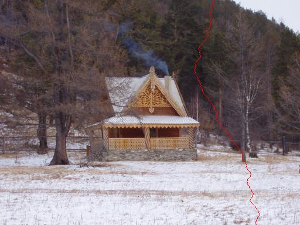
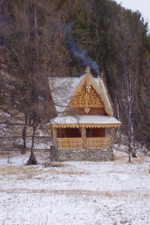
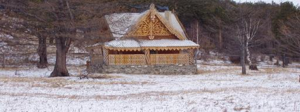
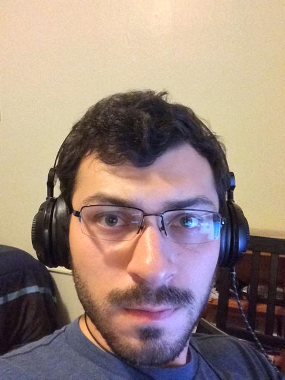
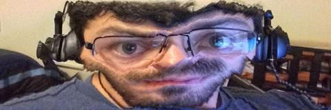

Project 4: Seam Carving/Content Aware Scaling
By Lucas Karahadian
Overview:
In this project we looked at seam carving. That is, the finding of a "minimal-energy" path a single pixel wide, called a seam, from one edge of an image to the other. This seam can then be removed to shrink the image without disrupting high energy content.
-

The image we wish to find a seam in.
(Click on images to see larger)
-

Same image with the minimal-energy seam highlighted in red.
I referred to minimal-energy in quotes above because there is no hard-set energy function for this procedure. For this project I used as my energy function the sum of the magnitude of the x and y gradients. This yielded results sufficient for my purposes. In addition, the algorithm used to find seams is the dynamic programming algorithm detailed in this paper.
Content Aware Scaling:
We can use these minimal-energy seams to achieve content aware scaling by finding and removing new seams until the image is the desired size. For the purposes of this project, I have only implemented single-directional scaling (either horizontal or vertical), but algorithms exist for intelligently scaling in multiple directions at once.
-

The image above scaled to 50% in the horizontal direction.
-

The image above scaled to 50% in the vertical direction
Square Wallpapers
To quickly create a number of good examples of this process, all the below pictures were scaled to perfect squares. This creates from desktop wallpapers perfect images for thumbnails on social media websites.

An unfortunate consequence of this process (which will be outlined more later) is when it is applied to images with uniformly heavy detail, it tends to remove image sections we don't want it to. The case above is not so bad, but the trees were scaled in very spooky manners that lend change the atmosphere of the image significantly.


Apart from some artifacting on the left border of the image, this turned out really well due to vast expanses of empty sky and sea for the seams to follow.


Something I observed in the process of this project is that horizontal and vertical seams really don't play well with established diagonals in images. This is seen very well in the above image, where the coastline trickles down the right side of the image due to seams wanting to keep the ocean itself and get rid of the beach below it.
This is one of my favorite results due to how the scaling process maintained the horizontal gradient of the sky from blue to orange.


{kind=link}
{kind=link}
{kind=link}
{kind=link}
{kind=link}
{kind=link}
{kind=link}
{kind=link}
{kind=link}
{kind=link}
{kind=link}
{kind=link}
As a sucker for space pictures, this result is by far my favorite. It is also a perfect example of the seam-carving algorithm in action, getting rid of the empty space between objects in the picture and just moving them closer together.
-

#selfie
-

That went better than expected.
{kind=link}
Limitations:
I got very lucky with making a square out of the picture of my face. Faces are notoriously difficult for content-aware scaling to deal with (as popularized online at reddit's content aware scale subreddit). In the case of the previous example, I was scaling my face to the absolute limit before strange things started happening. Let's see what happens when we go further.
{kind=link}
One reason this happens is the lack of high-energy content in the forehead and cheeks. Seams are totally fine eliminating pieces of these even though to our human perception, the forehead and cheeks are vital to the structure of the face. But we are still getting a bit lucky here. My beard is seen as high-energy content and so prevents seams from deviating below my nose and the scaling just squashes my head down. Also notice that my bed in the background of the left side of the picture is relatively untouched due to the seam preferring the wall above it.
-

And this is to go even further beyond.
{kind=link}
-

I think we should stop here.
One Final Example:
{kind=link}
{kind=link}
The reason I have chosen to make this my final example is because it encapsulates the good, bad, and the ugly about content-aware scaling. If you focus on the top half of the scaled image, you'll see the scaling working as it should, bringing all the disparate objects closer by removing unwanted blank space. However, as you look further down, you'll notice that there was so much high-energy content in the original image that the algorithm was unable to avoid cutting out important sections. In the worse cases you'll want to look at Pikachu and Yoshi in the bottom right, both of whom look like they were in some sort of horrific accident.
Lessons Learned:
The take-away from this project is that while many pictures have a lot of unneeded space that can be eliminated easily when scaling them down, it is not always the best idea to do so. Human faces, among other things, have blank space that is part of their core structure and that makes things look really surreal when eliminated carelessly. Modern image-editing software gets around this by allowing users to select regions to either keep or get rid of and by tailoring seams around these regions. But this is outside of my current scope, maybe next time.
Acknowledgements:
All pictures not taken of myself and my apartment were downloaded from reddit.
Website template borrowed from Daniel Tyrrell